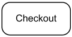
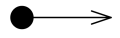
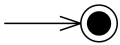
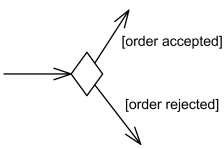
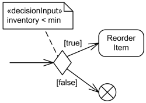
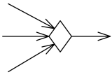
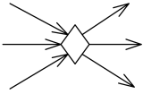
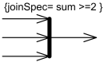
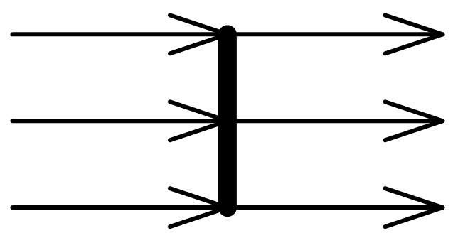

UML Activity Diagrams Reference
| Notation | Description |
|---|---|
| Activity | |
|
Online Shopping activity. |
Activity is parameterized behavior represented as coordinated flow of actions. Activity could be rendered as round-cornered rectangle with activity name in the upper left corner and nodes and edges of the activity inside. |
|
Authenticate User activity with two parameters - Login Id and Password. |
Activity parameters are displayed on the border and listed below the activity name as: |

Authenticate User activity frame with two parameters - Login Id and Password. |
The round-cornered activity border may be replaced with the diagram frame. The kind of the frame in this case is activity or act in short form. Activity parameters if any are displayed on the frame. |
| Partition | |
|
Activity partitions Customer and Order Dept as horizontal swimlanes. |
An activity partition is activity group for actions that have some common characteristic. Activity partition may be shown using a swimlane notation - with two, usually parallel lines, either horizontal or vertical, and a name labeling the partition in a box at one end. |

Activity partitions Customer and Order Dept as vertical swimlanes. |
|

Hierarchical partitioning with subpartitions. |
Hierarchical partitioning is represented using swimlanes for subpartitions. |

Buy action occurs in external partition Customer. |
When activities are considered to occur outside the domain of a particular model, the partition can be labeled with the keyword «external». |
|
Buy action occurs in external partition Customer. |
In the situations when we can't use swimlanes to show partitions, alternate text notation with qualified action name could be used instead. In this case partition name is placed in parenthesis above the action name. A comma-delimited list of partition names means that the node is contained in more than one partition. A double colon within a partition name indicates that the partition is nested, with the larger partitions coming earlier in the name. |
| Action | |

The Process Order action |
Actions are notated as round-cornered rectangles. The name of the action or other description of it may appear in the symbol. |

Example of action expressed in some application-dependent action language. |
Action could be expressed in some application-dependent action language. |

Local pre- and post-conditions shown as notes attached to Process Order action. |
Local pre-conditions and local post-conditions are shown as notes attached to the invocation with the keywords «localPrecondition» and «localPostcondition», respectively. |
|
Buy action occurs in external partition Customer. |
In the situations when we can't use swimlanes to show partitions, alternate text notation with qualified action name could be used instead. In this case partition name is placed in parenthesis above the action name. A comma-delimited list of partition names means that the node is contained in more than one partition. A double colon within a partition name indicates that the partition is nested, with the larger partitions coming earlier in the name. |
| Object Action | |
|
Object actions include different actions on objects. Object action is not present explicitly in UML standard, it is added here for clarity. In the UML standard all object actions are direct subclasses of action. Object actions:
|
|
| Variable Action | |

Variable actions overview diagram |
|
| Invocation Action | |
|
Invocation actions overview diagram |
|
| Call Behavior Action | |
|

Call behavior action for Checkout behavior |
Call behavior action is a call action that invokes a behavior directly rather than invoking an operation that invokes the behavior. It is shown as action with the name of the behavior that is performed by the action or description of the behavior placed inside the action's round-cornered rectangle. If the node name is different than the behavior name, then it appears in the symbol instead. Note, that because it looks exactly the same way as the common action, there is no way just looking at the diagram to say whether the name is common action name, call behavior action name or some behavior name. |

Call activity action for User Authentication activity |
Call activity action is indicated by a rake-style symbol within the action symbol. Note, that though UML 2.4 specification provides this notation, there is no official call activity action in the UML specification. |
| Send Signal Action | |

Notify Customer send signal action creates and sends Notify Customer signal |
Send signal action is an invocation action that creates a signal from its inputs, and transmits it to the specified target object, where it may cause the firing of a state machine transition or the execution of an activity. When all the prerequisites of the action execution are satisfied, a signal is generated from the arguments and is transmitted to the identified target object. The sender of the signal (aka "requestor") continues execution immediately, without waiting for any response. Send signal action is notated as convex pentagon. Note, that the name of the action corresponds to the name of signal class it sends. Target object is not specified with this notation. |
| Structural Feature Action | |
|
Structural feature actions overview diagram |
|
| Link Action | |
|
Link actions overview diagram. |
|
| Event Action | |
|
Event actions overview diagram. |
|
| Accept Event Action | |
|
Acceptance of the Accept Order signal causes an invocation of a Process Order action. The accept event action Accept Order is enabled on entry to the activity containing it, therefore no input arrow is shown. |
Accept event action is notated with a concave pentagon.
If an accept event action has no incoming edges, then the action starts when the containing activity or structured node does, whichever most immediately contains the action. In addition, an accept event action with no incoming edges remains enabled after it accepts an event. It does not terminate after accepting an event and outputting a value, but continues to wait for other events. An action whose trigger is a signal event is informally called accept signal action. It corresponds to send signal action. |
| Accept Event Action with incoming edges | |

Payment Requested signal is sent. The activity then waits to receive Payment Confirmed signal. Acceptance of the Payment Confirmed is enabled only after the request for payment is sent; no confirmation is accepted until then. |
Accept event action could have incoming edges. In this case the action starts after the previous action completes. |
| Wait Time Action | |
 is notated with an hour glass.")
The Every Hour accept time event action generates |
If the event is a time event occurrence, the result value contains the time at which the occurrence happened. Such an action is informally called a wait time action. Accept time event action (aka informal: wait time action) is notated with an hour glass. |
| Control Nodes | |

Activity control nodes overview. |
|
| Initial Node | |
|

Activity initial node. |
Initial node is a control node at which flow starts when the activity is invoked. Activity may have more than one initial node. Initial nodes are shown as a small solid circle. |
| Flow Final Node | |

Flow final node. |
Flow final node is a control final node that terminates a flow. The notation for flow final node is small circle with X inside. |
| Activity Final Node | |
|

Activity final node. |
Activity final node is a control final node that stops all flows in an activity. Activity final is new in UML 2.0. Activity final nodes are shown as a solid circle with a hollow circle inside. It can be thought of as a goal notated as "bull’s eye," or target. |
| Decision | |
|

Decision node with two outgoing edges with guards. |
Decision node is a control node that accepts tokens on one or two incoming edges
and selects one outgoing edge from one or more outgoing flows.
The notation for a decision node is a diamond-shaped symbol. |
![For decision points, a predefined guard [else] may be defined.](activity-diagrams/decision-ternary.png "For decision points, a predefined guard [else] may be defined.")
Decision node with three outgoing edges and [else] guard. |
For decision points, a predefined guard "else" may be defined for at most one outgoing edge. |
|

Decision node with decision input behavior. |
Decision can have decision input behavior.
Decision input behaviors were introduced in UML to avoid redundant recalculations in guards.
In this case each data token is passed to the behavior before guards are evaluated on the outgoing edges.
The output of the behavior is available to each guard.
Decision input behavior is specified by the keyword «decisionInput» and some decision behavior or condition placed in a note symbol, and attached to the appropriate decision node. |

Decision node with decision input flow. |
Decision may also have decision input flow.
In this case the tokens offered on the decision input flow that are made available to the guard on each outgoing edge
determine whether the offer on the regular incoming edge is passed along that outgoing edge.
A decision input flow is specified by the keyword «decisionInputFlow» annotating that flow. |
| Merge | |
|

Merge node with three incoming edges and a single outgoing edge. |
Merge node is a control node that brings together multiple incoming alternate flows
to accept single outgoing flow. There is no joining of tokens.
Merge should not be used to synchronize concurrent flows.
The notation for a merge node is a diamond-shaped symbol with two or more edges entering it and a single activity edge leaving it. |
| Merge and decision combined | |
|

Merge node and decision node combined. |
The functionality of merge node and decision node can be combined by using the same node symbol. |
| Fork | |

Fork node with a single activity edge entering it, and three edges leaving it. |
Fork node is a control node that has one incoming edge and multiple outgoing edges
and is used to split incoming flow into multiple concurrent flows.
The notation for a fork node is a line segment with a single activity edge entering it, and two or more edges leaving it. |
| Join Node | |

Join node with three activity edges entering it, and a single edge leaving it. |
Join node is a control node that has multiple incoming edges and one outgoing edge
and is used to synchronize incoming concurrent flows.
The notation for a join node is a line segment with several activity edges entering it, and only one edge leaving it. |
|

Join node with join specification shown in curly braces. |
Join specifications are shown in curly braces near the join node as joinSpec=.... |
| Join and fork combined | |
|

Combined join node and fork node. |
The functionality of join node and fork node can be combined by using the same node symbol. |
| Activity Edge | |
|
Activity edge connects Fill Order and Review Order. |
Activity edge could be control edge or data flow edge (aka object flow edge). Both are notated by an open arrowhead line connecting activity nodes. |
|
Activity edge "updated" connects Update Order and Review Order. |
Activity edge can be named, however, edges are not required to have unique names within an activity. If the edge has a name, it is notated near the arrow. |
|
Fill Order when priority is 1 |
The guard of the activity edge is shown in square brackets that contain the guard. The guard must evaluate to true for every token that is offered to pass along the edge. |
|
Connector A connects two edges between Fill Order and Review Order. |
An activity edge can be notated using a connector, which is a small circle with a name (also called label) in it. Connectors are generally used to avoid drawing a long edge. This is purely notational. Every connector with a given label must be paired with exactly one other with the same label on the same activity diagram. The circles and lines involved map to a single activity edge in the model. |
| Object Flow Edge | |
|
Data flow of Orders between Fill Order and Review Order actions |
Object flow edges are activity edges used to show data flow between action nodes. Object flow edges have no specific notation. |
|
Send Notification when number of Warnings reaches 6 |
The weight of the edge may be shown in curly braces that contain the weight. The weight is a value specification, which may be a constant, that evaluates to a non-zero unlimited natural value. An unlimited weight is notated as "*". |
| Interrupting Edge | |
|
Cancel Request signal causes interruption resulting in Cancel Order. |
Interrupting edge is activity edge expressing interruption for regions having interruptions. It is rendered as a lightning-bolt. |
|
Cancel Request signal causes interruption resulting in Cancel Order. |
An option for notating an Interrupting edge is a zig zag adornment on a straight line. |
| Object Nodes | |
|
Activity object nodes include parameter, pin, central buffer, expansion nodes. |
|
| Pin | |

Item is input pin to the Add to Shopping Cart action. 
Invoice is output pin from the Create Invoice action. |
A pin is an object node for inputs and outputs to actions. Pin is usually shown as a small rectangle attached to the action rectangle. The name of the pin can be displayed near the pin. |
| Data Store | |

Incoming Patient token is stored by the Patients data store. |
A data store is a central buffer node for non-transient information. The data store is notated as an object node with the keyword «datastore». |